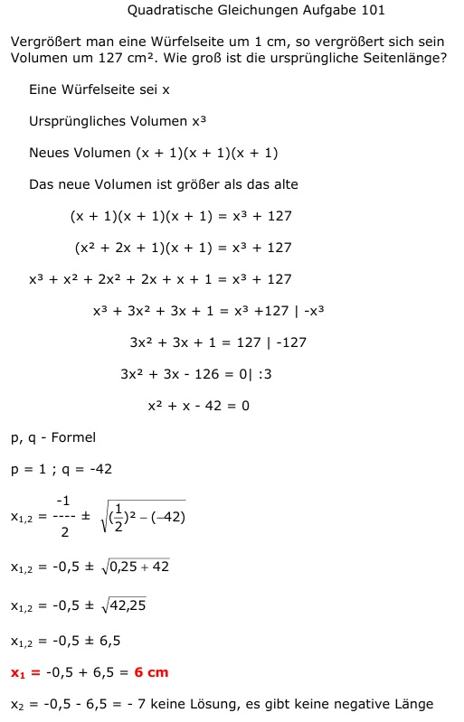

Quadratische Gleichungen Aufgabe 101 Vergrößert man eine Würfelseite um 1 cm, so vergrößert sich sein Volumen um 127 cm². Wie groß ist die ursprüngliche Seitenlänge? Eine Würfelseite sei x Ursprüngliches Volumen x³ Neues Volumen (x + 1)(x + 1)(x + 1) Das neue Volumen ist größer als das alte (x + 1)(x + 1)(x + 1) = x³ + 127 (x² + 2x + 1)(x + 1) = x³ + 127 x³ + x² + 2x² + 2x + x + 1 = x³ + 127 x³ + 3x² + 3x + 1 = x³ +127 | -x³ 3x² + 3x + 1 = 127 | -127 3x² + 3x - 126 = 0| :3 x² + x - 42 = 0 p, q - Formel p = 1 ; q = -42  x1,2 = -0,5 ± x1,2 = -0,5 ± x1,2 = -0,5 ± 6,5 x1 = -0,5 + 6,5 = 6 cm x2 = -0,5 - 6,5 = -7 keine Lösung, es gibt keine negative Länge.